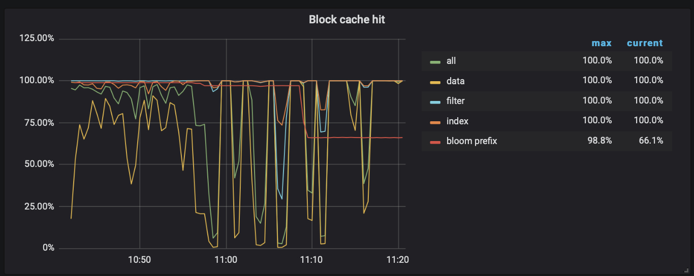

7.2 热点问题处理思路
众所周知，在分布式数据库中，除了本身的基础性能外，最重要的就是充分利用所有节点能力，避免让单个节点成为瓶颈。但随着业务场景的复杂性，各节点上的数据读写访问热度，总是无法保证均衡的，热点现象就此产生。严重的热点问题，会导致单个节点成为资源瓶颈，进而影响整个系统的吞吐能力。如果不能很好的解决热点问题，数据库的水平扩展能力及稳定性也就无法得到保障。TiDB 作为一个分布式数据库，虽然会自动且动态的进行数据的重新分布以到达尽可能的均衡，但是有时候由于业务特性或者业务负载的突变，仍然会产生热点，这时候往往就会出现性能瓶颈。
TiDB 是一个分布式的数据库，在表结构设计的时候需要考虑的事情和传统的单机数据库有所区别，需要开发者能够带着「这个表的数据会分散在不同的机器上」这个前提，才能做更好的设计。
7.2.1 确认热点问题
初步怀疑集群存在热点问题时，可以通过 TiDB 3.0 Grafana 提供的 TiKV-Trouble-Shooting 的 Dashboard 的 Hot Read 和 Hot Write 面板来快速确认是否存在读热点或者写热点。

Hot Read 面板聚集了读取热点相关的核心指标：
- CPU：每个 TiKV 节点的 CPU 使用率
- QPS：每个 TiKV 实例上各种命令的 QPS
- Storage ReadPool CPU：Readpool 线程的 CPU 使用率
- Coprocessor CPU：coprocessor 线程的 CPU 使用率
- gRPC poll CPU：gRPC 线程的 CPU 使用率，通常应低于 80%
- IO utilization：每个 TiKV 实例 IO 的使用率
Hot Write 面板聚集了写热点相关的核心指标：
- CPU：每个 TiKV 节点的 CPU 使用率
- QPS：每个 TiKV 实例上各种命令的 QPS
- gRPC poll CPU：gRPC 线程的 CPU 使用率，通常应低于 80%
- IO utilization：每个 TiKV 实例 IO 的使用率
- Raft store CPU：raftstore 线程的 CPU 使用率，通常应低于 80%
- Async apply CPU：async apply 线程的 CPU 使用率，通常应低于 90%
- Scheduler CPU：scheduler 线程的 CPU 使用率，通常应低于 80%
通过观察 Hot Read 和 Hot Write 面板中是否存在个别 TiKV 节点的指标明显高于其他节点，可以快速判断集群是否存在读热点或者写热点。
7.2.2 定位热点表 / 索引
确定是个别 TiKV 实例的热点问题后，需要进一步确认是哪张表的热点，是否是索引热点，是读还是写。从 TiDB 3.0 开始，推荐在热点现场通过 SQL 查询 information_schema.TIDB_HOT_REGIONS 表定位热点表/索引：
-- TYPE 用于过滤热点的类型，read 表示读热点，write 表示写热点
SQL> select * from information_schema.TIDB_HOT_REGIONS where type = 'read'\G
*************************** 1. row ***************************
TABLE_ID: 21
INDEX_ID: NULL
DB_NAME: mysql
TABLE_NAME: stats_histograms
INDEX_NAME: NULL
REGION_ID: 44
TYPE: read
MAX_HOT_DEGREE: 17
REGION_COUNT: 0
FLOW_BYTES: 248548
1 row in set (0.02 sec)
或者通过 pd-ctl 用于查询读、写流量最大的 Region：
$ pd-ctl -u http://{pd}:2379 -d region topread [limit]
$ pd-ctl -u http://{pd}:2379 -d region topwrite [limit]
上面的命令中，输出信息中最核心的内容就是 region_id：
$ pd-ctl -u http://{pd}:2379 -d region topread 1
{
"as_peer": null,
"as_leader": {
"1": {
"total_flow_bytes": 248535,
"regions_count": 1,
"statistics": [
{
"region_id": 44,
"flow_bytes": 248548,
"hot_degree": 15, -- 每分钟统计 1 次，如果是热点，degree+1
"last_update_time": "2020-03-07T16:14:51.186168306+08:00",
"AntiCount": 1,
"Version": 11,
"Stats": null
}
]
}
}
}
再从 Region ID 定位到表或索引：
$ curl http://{TiDBIP}:10080/regions/{RegionId}
{
"region_id": 44,
"start_key": "dIAAAAAAAAAV",
"end_key": "dIAAAAAAAAAX",
"frames": [
{
"db_name": "mysql",
"table_name": "stats_histograms",
"table_id": 21,
"is_record": false,
"index_name": "tbl",
"index_id": 1
},
{
"db_name": "mysql",
"table_name": "stats_histograms",
"table_id": 21,
"is_record": true
}
]
}
最后根据热点表表结构和业务沟通改造方案。如果热点现场已过，可以通过业务监控提取问题表和问题 SQL。未来 TiDB 4.0 即将提供的 Key Visualizer 功能，直观展示整个数据库的不同位置数据访问频度和流量，快速定位热点，具体可参考本书的"识别集群热点和业务模式"章节。
7.2.3 读热点解决方案
TiDB 读取热点产生的原因通常是 TiKV 的 BlockCache 命中率下降或者是小表的并发读取过大。检查 TiKV-Details Dashboard 里 RocksDB KV 面板里的 Block cache hit 命中率，如果发现命中率出现大幅度下降或抖动，基本可以定位为慢 SQL 问题；否则倾向于怀疑是小表的大量并发读取导致的。

BlockCache 命中率下降 BlockCache 的命中率下降或者抖动时可能是存在全表扫描的 SQL、执行计划选择不正确的 SQL、存在大量 count(*) 操作的 SQL 等等。可以参照本书 "快速定位慢 SQL" 的章节来定位，通过添加索引或者优化 SQL 语句执行计划、增加 SQL_NO_CACHE 的 Hints 等手段来进行优化。
Region 并发读取过高 有些表数据量不大、包含的 Region 数量较少，但业务查询频繁的命中个别 Region 最终导致单个 TiKV 节点性能达到极限。目前可以通过改造小表为 hash 分区表来保证数据均匀地分散到一定数量的分区来解决。从 SHOW TABLE REGIONS 命令可以观察到新建的 hash 分区表已经提前创建了4个分区：
SQL> CREATE TABLE t1( -> id INT NOT NULL, -> name VARCHAR(30), -> hired DATE NOT NULL DEFAULT '1970-01-01', -> separated DATE NOT NULL DEFAULT '9999-12-31', -> store_id INT -> ) -> PARTITION BY HASH(store_id) -> PARTITIONS 4; Query OK, 0 rows affected (1.29 sec) SQL> show table t1 regions\G *************************** 1. row *************************** REGION_ID: 840 START_KEY: t_194_ END_KEY: t_195_ LEADER_ID: 843 LEADER_STORE_ID: 9 PEERS: 841, 842, 843 SCATTERING: 0 WRITTEN_BYTES: 35 READ_BYTES: 0 APPROXIMATE_SIZE(MB): 1 APPROXIMATE_KEYS: 0 *************************** 2. row *************************** REGION_ID: 844 START_KEY: t_195_ END_KEY: t_196_ LEADER_ID: 847 LEADER_STORE_ID: 9 PEERS: 845, 846, 847 SCATTERING: 0 WRITTEN_BYTES: 35 READ_BYTES: 0 APPROXIMATE_SIZE(MB): 1 APPROXIMATE_KEYS: 0 *************************** 3. row *************************** REGION_ID: 848 START_KEY: t_196_ END_KEY: t_197_ LEADER_ID: 851 LEADER_STORE_ID: 9 PEERS: 849, 850, 851 SCATTERING: 0 WRITTEN_BYTES: 35 READ_BYTES: 0 APPROXIMATE_SIZE(MB): 1 APPROXIMATE_KEYS: 0 *************************** 4. row *************************** REGION_ID: 3 START_KEY: t_197_ END_KEY: LEADER_ID: 475 LEADER_STORE_ID: 9 PEERS: 458, 471, 475 SCATTERING: 0 WRITTEN_BYTES: 217 READ_BYTES: 0 APPROXIMATE_SIZE(MB): 1 APPROXIMATE_KEYS: 0 4 rows in set (0.05 sec)除了可以通过改造为 hash 表之外，TiDB 3.1 版本提供的 Follower Read 功能增加了集群的吞吐能力，也能在一定程度上缓解读热点。未来在 TiDB 4.0，PD 会提供 Load Base Splitting 策略，除了根据 Region 的大小进行 Region 分裂之外，还会根据访问 QPS 负载自动分裂频繁访问的小表的 Region，具体参考本书"弹性调度"章节。
7.2.4 写热点解决方案
TiDB 写入热点的业务场景通常有：
- 业务从 MySQL 迁移到 TiDB 时保留了自增主键
- 高并发写入无主键表/主键非 int 的表/联合主键的表
- 高并发写入的表上存在递增索引，比如时间索引等
- 高并发更新小表
- 秒杀或者类似的场景下的单行热点问题
7.2.4.1 自增主键
MySQL 为了提高顺序写入的性能，通常都建议业务使用自增 ID 作为主键。而TiDB 中数据按照主键的 Key 切分成很多 Region，每个 Region 的数据只会保存在一个节点上面。业务带着自增主键迁移到 TiDB 后，最新写入的数据大概率都在同一个 Region 上，也就是同一个 TiKV节点上，从而引起热点。
从 MySQL 迁移到 TiDB 的时候，建议去掉自增主键，同时通过设置 SHARD_ROW_ID_BITS，把 rowid 打散写入多个不同的 Region，缓解写入热点。但是设置的过大会造成 RPC 请求数放大，增加 CPU 和网络开销。
- SHARD_ROW_ID_BITS = 4 表示 16 个分片
- SHARD_ROW_ID_BITS = 6 表示 64 个分片
- SHARD_ROW_ID_BITS = 0 表示默认值 1 个分片
语句示例：
CREATE TABLE：CREATE TABLE t (c int) SHARD_ROW_ID_BITS = 4;
ALTER TABLE：ALTER TABLE t SHARD_ROW_ID_BITS = 4;
SHARD_ROW_ID_BITS 的值可以动态修改，每次修改之后，只对新写入的数据生效。未来 TiDB 4.0 会引入 auto_random 特性，彻底解决数据打散问题。
7.2.4.2 隐式主键
如果业务的表没有主键或主键不是 int 类型或联合主键时，TiDB 内部会自动生成隐式的 _tidb_rowid 列作为行 ID。在不使用 SHARD_ROW_ID_BITS 的情况下，_tidb_rowid 列的值基本也为单调递增，大量 INSERT 时数据会集中写入单个 Region，造成热点。
要避免由 _tidb_rowid 带来的写入热点问题，可以在建表时，使用 SHARD_ROW_ID_BITS 和 PRE_SPLIT_REGIONS 两个建表选项。SHARD_ROW_ID_BITS 用于将 _tidb_rowid 列生成的行 ID 随机打散。pre_split_regions 用于在建完表后预先进行 Split region。
注意： pre_split_regions 必须小于或等于 shard_row_id_bits。
示例：
create table t2 (a int, b int) shard_row_id_bits = 4 pre_split_regions=2;
- SHARD_ROW_ID_BITS = 4 表示 tidb_rowid 的值会随机分布成 16 （16=2^4） 个范围区间。
- pre_split_regions=2 表示建完表后提前切分出 4 (2^2) 个 Region。
7.2.4.2 高并发更新小表
类似小表的并发读取过高场景，小表并发更新过高导致的写入热点，4.0 之前，需要通过手工切分热点 Region 来临时解决。定位到热点 Region，命令示例如下：
$ pd-ctl -u http://{PDIP}:2379 -i
// 将 Region 1 对半拆分成两个 Region，基于粗略估计值
> operator add split-region {hotRegionId} --policy=approximate
// 将 Region 1 对半拆分成两个 Region，基于精确扫描值
> operator add split-region {hotRegionId}1 --policy=scan
注意： 手工切分的 Region 在经过 split-merge-interval 之后，可能会被合并，split-merge-interval 控制对同一个 Region 做 split 和 merge 操作的间隔，即对于新 split 的 Region 一段时间内不会被 merge，这个参数可以通过 pd-ctl 来更改，默认值是 1h。
中长期的解决方式是通过改造小表为 hash 分区表解决，或者是业务改造后通过队列缓存更新后批量提交等方式解决。未来 TiDB 4.0 版本的解决方式在 Region 并发读取过高时已经说明，此处略。
7.2.4.3 单调递增索引
当表上存在时间字段的索引、或者订单 ID 等单调递增的索引导致的写入热点，目前可以通过手工切分热点 Region 来临时解决。切分的方式在高并发更新小表时有过说明。
7.2.4.4 秒杀等单行热点
秒杀减库存等单行热点更新的场景下，大量请求并发更新同一行记录，推荐调整为 TiDB 的悲观锁。目前对于这类“极端”场景，建议通过异步队列或者缓存在来解决，TiDB 上云之后，可以考虑通过弹性调度隔离到高性能机器来解决。
7.2.5 调整 PD 的热点调度策略
上面介绍了针对不同热点场景的解决方案，下面说一下通用的通过 PD 调度策略来缓解热点的思路，可以作为热点问题解决方案的补充。PD 对于写热点，热点调度会同时尝试打散热点 Region 的 Peer 和 Leader；对于读热点，由于只有 Leader 承载读压力，热点调度会尝试将热点 Region 的 Leader 打散。
7.2.5.1 热点调度规则
热点调度对应的调度器是 hot-region-scheduler-limit，根据 Store 上报的信息，统计出持续一段时间读或写流量超过一定阈值的 Region，并用与负载均衡类似的方式把这些 Region 分散开来，对于写热点，热点调度会同时尝试打散热点 Region 的 Peer 和 Leader；对于读热点，由于只有 Leader 承载读压力，热点调度会尝试将热点 Region 的 Leader 打散。
7.2.5.2 提高 PD 的热点调度速度
在 TiDB 3.0 版本开始，将热点调度并发度从 region-schedule-limit 拆出到 hot-region-schedule-limit ，可以通过加大 hot-region-schedule-limit、并减少其他调度器的 limit 配额，加速热点调度。还可调小 hot-region-cache-hits-threshold 使 PD 更快响应流量的变化。
// 调大 hot-region-schedule-limit
config set hot-region-schedule-limit 8
// 调小其他调度器 limit 配额
config set merge-schedule-limit 2
config set region-schedule-limit 2
7.2.5.3 整体打散表 Region 分布
在之前所述的读写热点解决方案都无法打散热点时，可以尝试在业务低峰时间添加 scatter-range-scheduler 调度器使这个 table 的所有 Region 均匀分布。添加 scatter-range-scheduler 调度器示例：
curl -X POST http://{TiDBIP}:10080/tables/{db}/{table}/scatter
清理 scatter-range-scheduler 调度器示例：
curl -X POST http://{TiDBIP}:10080/tables/{db}/{table}/stop-scatter
7.2.6 热点案例：
核心业务有 2 个表，一个是业务数据表 A ，一个是相对应流水表 B 。开始做设计时业务 A 和 B 都是一个字符型主键加一个时间索引。A 的数据大小 1.5K 。B 的数据比较小。按照这种设计模式，表 A、B 的数据本身和相对应的时间索引都是热点。另外 2 个自定义的主键也可能存在热点。
考虑到 TiDB 2.1 版本单 TiKV 只有一个线程处理 raft 消息。并且 A 的数据比较大。最终只对 A 表的主键进行改造，把原主键的一部分拿出来做成 bigint 类型，并且在最前面 1 位做成 0-9 的随机数。人为的把 A 表的数据分成 10 片。因为 A 表数据比较大。此时，其他几部分的热点相对于整个业务来说，虽然是热点，但是成为不了瓶颈。